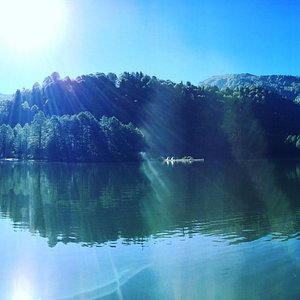
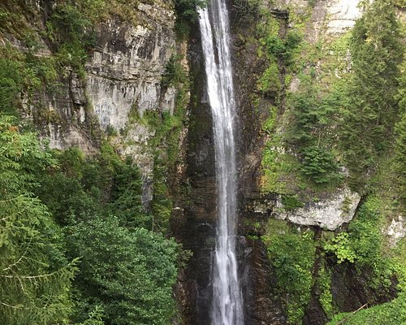

Artvin (Gürcüce: ართვინი (artvini), Rusça: Артвин (Artvin), Ermenice: Արդվին (Ardvin), Lazca: Art'vini); Türkiye'nin Karadeniz Bölgesi'nin doğu ucunda bulunan bir şehirdir ve Artvin ilinin merkezidir.
Artvin, Orta Çağ'da Gürcistan'ın bölgelerinden biri olan Klarceti'deki yerleşmelerden biriydi. Önemli yolların geçtiği bir kavşakta yer alıyordu. Bir yandan Erzurum, Bayburt, Ardahan ve Ardanuç'a, diğer yandan Batum ve Hopa'ya açılıyordu. Şehir ayrıca Çoruh Havzası'nda Artvin ile Batum arasındaki su yoluyla taşımacılığın iskelelerinden biriydi.
Çoruh Havzasında bulunan Artvin, antik çağda Kolhis ve İberya sınırları içinde yer alıyordu. Bazı araştırmacılar, Yunan mitolojisinde adı geçen Fasis Nehrinin Rioni değil, Artvin’in de kıyısında yer aldığı Çoruh olduğunu ileri sürerler. Artvin’in Kolheti döneminde Tunç Çağı yerleşmesi olduğu kabul edilir. Klasik kronolojiyle bölge tarihini aktaran kaynaklara göre, bulunduğu yer itibarıyla Artvin, İÖ 8. yüzyılda Kimmerler, İÖ 7. yüzyılda İskitler tarafından istila edildi. İÖ 200 yılında İberya Krallığı'nın, İÖ 119'da Pontus'un, İÖ 65 yılında Roma'nın egemenliğine girdi.1944 yılında Kılıç Kökten'in yaptığı kazılarda il çevresinde MÖ 3500-2200 yıllarına tarihlenen Kura-Aras (Erken Trans-Kafkasya Kültürü) ile ilişkilendirilen yerleşim izlerine rastlanmıştır.
Artvin, erken Orta Çağ'da Gürcülerin önemli merkezi olan Tao-Klarceti bölgesinde, 8-9. yüzyıllarda kurapalatilerin yönettiği bir yerdi. Sonra birleşik Gürcistan Krallığı içinde yer aldı. Birleşik Gürcistan krallığını parçalanmasından ve Moğol istilasından sonra 13. yüzyılda Gürcü atabeglerin yönetimine girdi. 16. yüzyılda, Gürcü atabeglerini gerileten Osmanlıların eline geçti. Osmanlılar Tao-Klarceti’yi tamamen ele geçirince bu topraklarda Çıldır Eyaleti’ni kurdular. Artvin bu eyalet içinde Livana (Nisf-i Livana) adlı livanın (sancak) merkeziydi. Uzun süre Osmanlı yönetimi altında kalan Artvin, 1877-1878 Osmanlı-Rus Savaşı’nda Rusların eline geçti.

